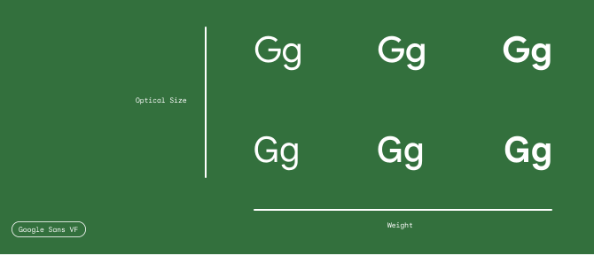
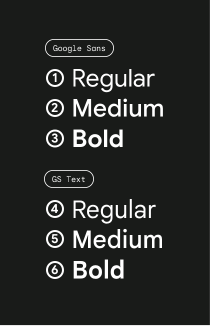
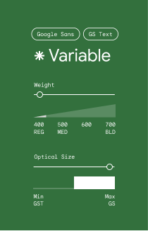
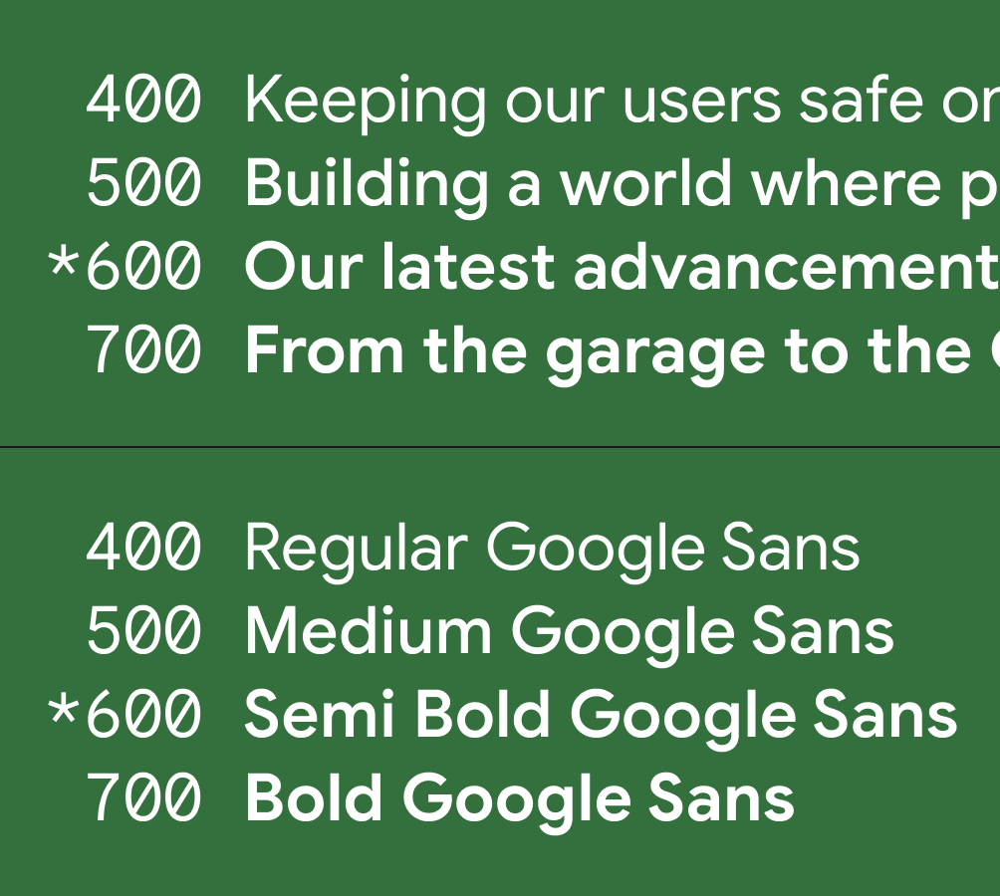
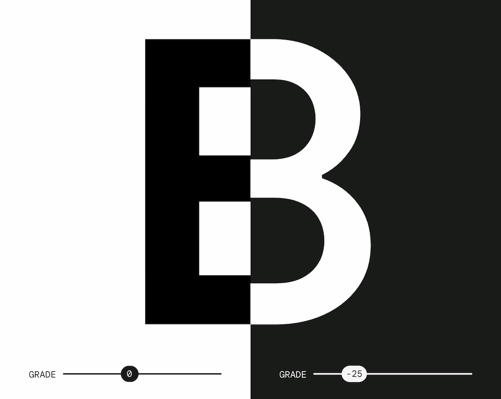

Google Sans is available as a variable font with axes for weight, grade and optical size, across Roman and Italic styles.
Note: Italic styles are in a separate VF font file, that contains the same axes.


The weight axis provides a full, continuous range of weights between Regular (400) and Bold (700).

Beyond what was originally offered within the Google Sans static fonts, the weight axis now offers the ability to use incremental weights, like Semi-Bold (600).
The optical size axis acts like a toggle between the maximum optical size (18pt and larger) and the minimum optical size (17pt and smaller) that was originally offered as the Google Sans Text static fonts.
The grade axis is optically similar to weight, but much more nuanced.
With a grade axis, letters are adjusted to render lighter or darker, yet still occupy the same horizontal space and avoid reflow of text.

A grade adjustment can give your text better optical parity between light and dark themes, which means that although the letterforms in the two examples are different, they’re more compatible in terms of appearance and legibility.
With dark UI themes, these micro adjustments at a global scale can deliver a more refined experience.